MOSE Dataset Examples
| 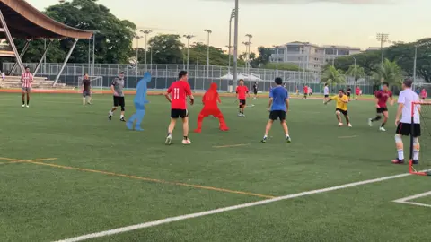 | 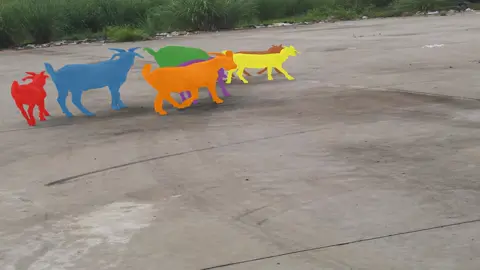 | 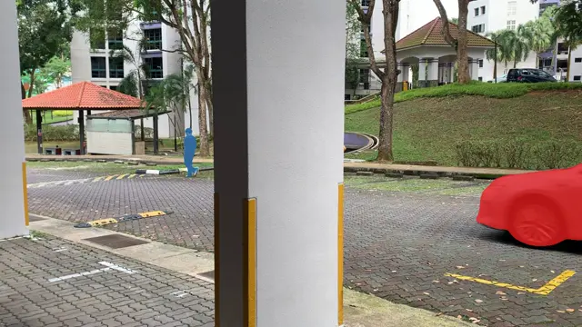 |  |
| 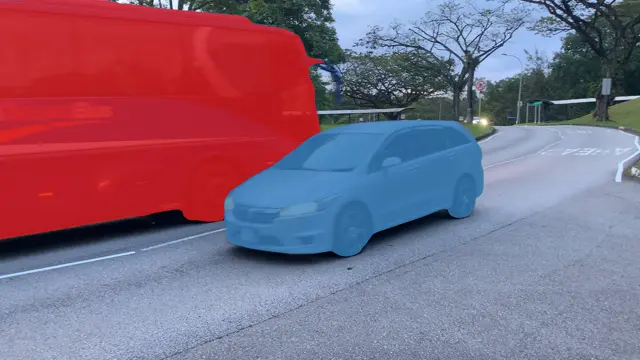 | 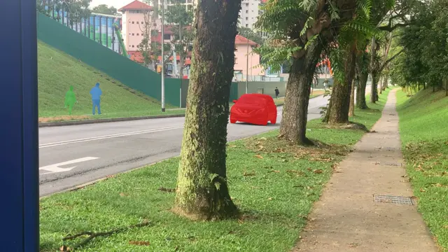 | 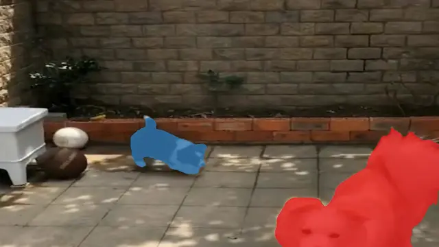 |  |
The 1st MOSE challenge will be held in conjunction with CVPR 2024 PVUW Workshop in Seattle, USA. In this edition of the workshop and challenge, we focus on video object segmentation under complex environments. MOSE contains 2,149 video clips and 5,200 objects, with 431,725 high-quality object segmentation masks. The video resolution is 1920×1080 and the video lengths are 5 to 60 seconds in general. The most notable feature of MOSE is complex scenes, including the disappearance-reappearance of objects, inconspicuous small objects, heavy occlusions, crowded environments, etc. The goal of MOSE dataset is to provide a platform that promotes the development of more comprehensive and robust video object segmentation algorithms. The workshop will culminate in a round table discussion, in which speakers will debate the future of video object representations.
| Team Name | Team Members | Organization | Technical Report | J&F | J | F |
|---|---|---|---|---|
| PCL_VisionLab | Deshui Miao1,2, Xin Li2, Zhenyu He1,2, Yaowei Wang2, Ming-Hsuan Yang3 |
1Harbin Institute of Technology (ShenZhen), 2Peng Cheng Laboratory, 3University of California at Merced |
PDF Video |
84.5 | 81.0 | 87.9 |
| Yao_Xu_MTLab | Zhensong Xu1, Jiangtao Yao1, Chengjing Wu1, Ting Liu1, Luoqi Liu1 |
1MT Lab, Meitu Inc | 83.5 | 80.1| 86.8 | |
| ISS | Xinyu Liu1, Jing Zhang1, Kexin Zhang1, Yuting Yang1, Licheng Jiao1, Shuyuan Yang1 |
1Intelligent Perception and Image Understanding Lab, Xidian University | 82.2 | 78.8 | 85.6 | |
| 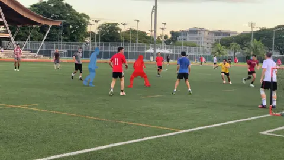 | 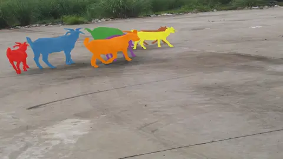 | 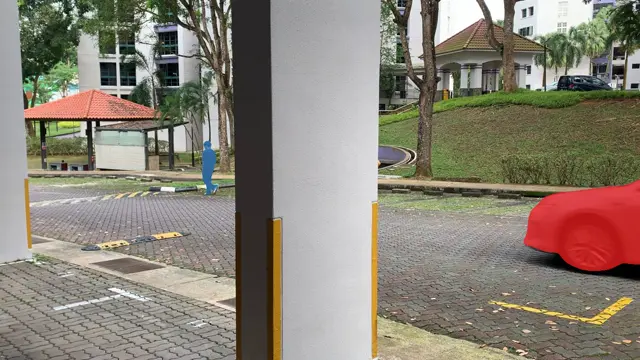 | |
| 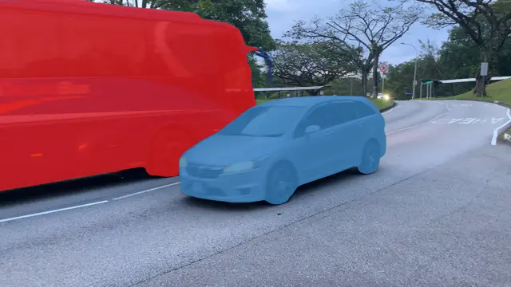 | 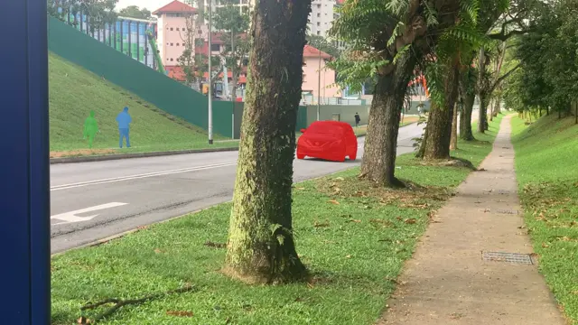 | 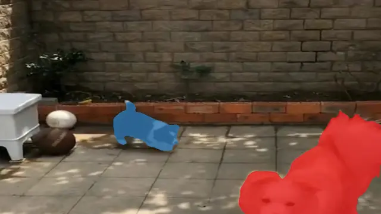 | |
 |
|||
| Henghui Ding Primary Organizer |
Chang Liu Primary Organizer |
||
 |
 |
||
| Shuting He Nanyang Technological University |
Xudong Jiang Nanyang Technological University |
Philip H.S. Torr University of Oxford |
Song Bai ByteDance |
@inproceedings{MOSE,
title={{MOSE}: A New Dataset for Video Object Segmentation in Complex Scenes},
author={Ding, Henghui and Liu, Chang and He, Shuting and Jiang, Xudong and Torr, Philip HS and Bai, Song},
booktitle={ICCV},
year={2023}
} MOSE is licensed under a CC BY-NC-SA 4.0 License. The data of MOSE is released for non-commercial research purpose only.
MOSE is licensed under a CC BY-NC-SA 4.0 License. The data of MOSE is released for non-commercial research purpose only.